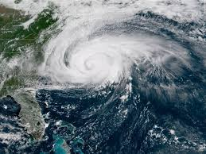

>
News_2News_3
Canadiens send mixed signals with Pacioretty trade

You win some, you lose some.
Making player moves to give a team the best chance at long-term success is a big part of a general manager's
role with a professional sports franchise.
With the Quebec general election
campaign rolling along, one has to wonder where GM Marc Bergevin's popular vote count sits among Montreal
Canadiens fans, who awoke Monday morning to the news he traded captain Max Pacioretty to the Vegas Golden
Knights a few hours earlier.
Canadiens trade captain Max Pacioretty to Golden Knights>
Pacioretty's agent refutes rumours of trade request
Team owner Geoff Molson defended Bergevin's latest move, saying Pacioretty and his representative requested a
trade last season, while Bergevin said a contract extension was not on the table for the 29-year-old
Pacioretty. In exchange for Pacioretty, the Canadiens receive 27-year-old winger Tomas Tatar, 19-year-old
prospect Nick Suzuki and a 2019 second-round pick.
Watch Habs' owner, GM explain Max Pacioretty trade:
Marc Bergevin and Geoff Molson on the Max Pacioretty trade
WATCH 00:00 00:52
Marc Bergevin and Geoff Molson on the Max Pacioretty trade 0:52
So, Monday's move finally signals the start of a rebuild for a team that has missed the playoffs twice in
the
past three years, right?
"It's a word I'm not really willing to use," Bergevin told reporters at the team's annual golf tournament on
Monday. "If you say rebuild, it means you start from scratch.
Habs never found solution to training camp struggles, slow start
"Well, [goalie] Carey Price is going to be here for a long time [with an eight-year contract extension that
begins this season. [All-star defenceman] Shea Weber is going to be here for a long time [with eight years left
on his deal]. We need some leadership and I want to have a team that's going to compete to make the playoffs
this year and get better every year."
CBC Sports' Rob Pizzo breaks down the Pacioretty deal:
Trade analysis: Who won the Max Pacioretty deal?
WATCH 00:00 01:59
Now that the saga is finally over in Montreal, Rob Pizzo explores which team's fanbase should be happier after
the trade. 1:59
The direction of the team is up for debate, particularly when you review some of Bergevin's most recent work:
In June 2016, Bergevin —
four-plus years into his role as Canadiens GM — acquired veteran forward Andrew Shaw
from Chicago for two second-round draft picks.
Later that month, popular defenceman P.K. Subban and, some would say, franchise cornerstone at the prime age of
27, was shipped to Nashville for the 33-year-old Weber, an aging blue-liner who missed 55 games due to injury
last season and could be out until the new year following surgery to repair a meniscal tear in his right knee.
In June 2017, Bergevin did what many fans wished he didn't as he dealt the Canadiens' top prospect, defenceman
Mikhail Sergachev, to Tampa Bay for hometown forward Jonathan Drouin. Yes, Drouin could become a standout
player for Montreal, but the 23-year-old winger posted a minus-28 rating last season and the team prefers him
on the wing.
Former Canadiens top prospect, defenceman Mikhail Sergachev, successfully made the leap from junior to the NHL
last season with Tampa Bay as a 19-year-old. (Bruce Bennett/Getty Images)
Many believe Bergevin should never have moved Sergachev, who successfully made the leap from junior to the NHL
last season as a 19-year-old, unless he received a promising centre in return, the team's most glaring need.
On July 1, Bergevin signed 28-year-old free-agent blue-liner Karl Alzner, who was a career-best plus-23 the
previous season with Washington but isn't very mobile, the Canadiens' biggest problem on the back end at the
time.
Later that summer, after Bergevin let pending free-agent forward Alex Radulov walk (he later signed a five-year
deal with Dallas and posted 72 points last season), the GM signed Alex Galchenyuk, the third overall pick in
2012, to a three-year, $14.7-million US deal, even though the team couldn't determine if he was a winger or
centre.
Three months ago, Bergevin traded Galchenyuk, still only 24 and coming off a 51-point season, to Arizona for
23-year-old winger Max Domi, who had nine goals and 45 points in the 2017-18 campaign. Problem is, like many of
his new teammates, the son of former NHL tough guy Tie Domi is smaller than the six-foot-one, 210-pound
Galchenyuk.
Inexperience down middle
Sure, the Canadiens still have Price, considered the best goalie in the world in recent years, but is he the
next veteran on the chopping block? He's 31 and injuries limited the Vancouver native to 12 games in the
2015-16 season and 49 a year ago.
Coach Julien discusses potential young additions to Canadiens' roster:
Canadiens coach Claude Julien: "I have to look at the future in front of me"
WATCH 00:00 01:49
Julien spoke to the media after the Canadiens traded captain Max Pacioretty. 1:49
While Bergevin kept busy over the summer signing restricted free-agent forwards Joel Armia, Hunter Shinkaruk
and Phillip Danault, among others, Montreal will open training camp later this week, boasting Danault, Drouin,
veteran checking forward Tomas Plekanec and Matthew Peca down the middle. It's a far cry from the Sidney Crosby
and Evgeni Malkin 1-2 punch that head coach Mike Sullivan will roll out in Pittsburgh.
Canadiens acquire Armia, Mason from Jets
And how does it stack up against the Auston Matthews-John Tavares-Nazem Kadri trio of the Habs' divisional
opponent and longtime rivals, the Toronto Maple Leafs?
"As a coach, you need to look at your team and what your strengths are," Canadiens head coach Claude Julien
said Monday. "I think we're a fast team and have to use it to our advantage. We're not overly big … but we need
to move the puck quicker.
"We're going to be a team that's going to compete hard this year. I think the less we say, the more we show,
it's going to be much better. We need to go out there and show what we are."
News_1News_3
Storm of a lifetime': 1.7 million ordered to flee approaching fury of Florence

Hurricane Florence is shifting, with its path now tilting a little more south and west, but its
destructive power remains assured.
The Category 4 storm, packing winds of up to 225 kilometres per hour, is forecast to come ashore in
North and South Carolina sometime Thursday night or Friday morning.
However, the effects of the 800-kilometre-wide storm will be felt through many southern states.
Charlotte Miller wades in an angry ocean Wednesday morning at Nags Head, N.C., ahead of the arrival of
Hurricane Florence. Waves pushed by the approaching storm are already starting to pound beaches. (Joe
Raedle/Getty Images)
The U.S. National Weather Service is projecting rainfall totals of 30 to 60 centimetres in some areas —
more than enough to cause flash flooding — calling it the "storm of a lifetime."
And it's the storm surge, already being pushed some 480 kilometres ahead of the eye, that is really
worrying authorities.
Water levels along the Carolina coast will be up to 4 metres higher in places, as the ocean is driven
far inland by the high winds and waves — a "life-threatening inundation," per the U.S. National
Hurricane Center.
More than 5.4 million people live in the areas currently under hurricane watches and warnings, while
another 4.89 million are under tropical storm watches and warnings, according to the National Weather
Service. In Virginia, North and South Carolina, 1.7 million people have been told to evacuate their
homes.
Donald Trump has been doing his best to drive home the danger of the "tremendously big and a
tremendously wet" storm.
A sign in Wrightsville Beach, N.C., gives mandatory evacuation times ahead of Hurricane Florence's
landfall. (Carlo Allegri/Reuters)
Today, the White House posted a video of the U.S. president standing in the Rose Garden and cautioning
citizens to take the warnings seriously.
"Get out of its way. Don't play games with it. It's a big one," he says.
Still, Trump wasn't able to resist the impulse to boast about his administration's response to last
year's devastating hurricanes, Harvey and Maria.
The reality is that with the recently revised death toll of almost 3,000 people in Puerto Rico, Maria
now stands as the second-deadliest hurricane in U.S. history. And many residents of island, not mention
the rest of the world, found the government response lacking.
Power was only fully restored in mid-August, 11 months after the storm hit. And some of the sorely
needed supplies that the Federal Emergency Management Agency (FEMA) did fly in never made it to the
people, like the 1 million bottles of water that are still sitting on the edge of an airport runway in
the hard-hit city of Ceiba.
There are also allegations that disaster relief funds are being diverted to pay for Trump's crackdown
on illegal immigration. Last night, Sen. Jeff Merkley, a Democrat from Oregon, released documents that
appear to show that the U.S. Department of Homeland Security transferred almost $10 million from FEMA's
operations budget to Immigration and Customs Enforcement (ICE) to help pay for detentions and
deportations.
U.S. Marine recruits at the military depot in Parris Island, S.C., prepare to evacuate on Tuesday.
(Lance Cpl. Yamil Casarreal/via Reuters)
But while North Americans focus on Florence, there's an equally dangerous storm bearing down on the
Philippines, Taiwan and Hong Kong.
Super Typhoon Mangkhut is packing Category 5 winds of 278 km/h. It has already caused extensive
flooding and power outages as it skirted past Guam.
Mangkhut is expected to hit Taiwan and mainland China this weekend.

The Global Disaster Alert and Coordination System is warning that 43.3 million people might be affected
by its winds and rain.
Back on the ice in Humboldt
The National's Susan Ormiston is in Humboldt, Sask., to cover the Broncos season opener tonight, the
first time the team has played since the devastating team bus crash in April.
The Humboldt Broncos start their new hockey season tonight with a game against the team they would have
met in the playoffs on April 6, the fateful night of their bus trip to Nipawin, Sask., that ended and
changed so many lives.
There's no underplaying the range of emotions surrounding this game. The team is all new, save for two
surviving players who are strong enough to return.
The rest of the former players who survived the crash will be back in the sold-out arena, save for
three — two still in hospital and one who finds the whole event just too difficult to deal with right
now.
The new Humboldt Broncos team gets strategic pointers from the coaching staff on Tuesday at their last
practice ahead of tonight's home opener against the Nipawin Hawks. (Sarah Bridge/CBC)
Hockey parents once bound by cold rinks at odd hours, but now by searing memories, will be back in
Humboldt tonight, too.
And new Broncos coach Nathan Oystrick, a Regina native who went on to play pro for 10 years, is facing
a big test. Not just a brand new team, but live cross-Canada coverage Wednesday night, and managing the
emotion around the loss of 16 people who just five months ago were such a big part of the Broncos
organization.
Oystrick never knew former coach Darcy Haughan, who died in the crash, but misses him nonetheless.
"In any other job like this, if a coach had moved on you could still call the guy or text them and ask
them what the password was, or ask him how this ran last year, or ask him any of those questions,"
Oystrick says. "This year I couldn't. So it was kinda trial by error.
"I'm sure I've made a few mistakes, but I'm learning from them."
New Humboldt Broncos coach Nathan Oystrick leans over the boards at the Elgar Petersen Arena on Tuesday
as the team prepares for tonight's home opener. (Sarah Bridge/CBC)
I'm a Saskatchewan girl too — I told Oystrick that when I met him at the Broncos bench Tuesday. I said
I never thought I'd be back in my home province to cover such a massively tragic story.
He said, "I never thought I'd be back in Saskatchewan to coach."
The Broncos story has brought so many people together, and in a significant way that is its strength.
Broncos Strong will be on display this evening in the Elgar Petersen Arena.
- Susan Ormiston
WATCH: Susan Ormiston's coverage of the Humboldt Broncos home opener tonight on The National on CBC
Television and streamed online
READ/WATCH: Read Susan Ormiston's online feature about Broncos bus crash survivor Ryan Straschnitzki's
recovery and his drive to regain independence, or watch the story from The National here
Adrienne Arsenault on assignment
Adrienne Arsenault, producer Michelle Gagnon and video producer Jean-Francois Bisson are in Colombia
near the border, reporting on the mass migration of Venezuelans fleeing the economic and political
chaos in their nation.
We knew right away when we met some of these people — these mums and their kids fleeing Venezuela, with
their pants still wet from crossing the river — that we would all want to know what happened next.
It's a basic human instinct to wonder that. Where was Sandra going to sleep with those two little girls
when she didn't even have money for a little plastic bag of water?
What would Isabelle, still so ill with ovarian cancer, do with her daughters Roxibelle and Rachel? They
should be in school in Colombia now, but aren't because that would mean money they don't have for
uniforms and books.
READ: Venezuelan migrants face uncertainty as they flee starvation
But it's the nature of this unnatural mass migration that staying in touch is hard.
If the people we meet have a place to charge a phone, if someone can connect them to wifi, maybe you
can exchange a message. But when these weary travellers don't seem to know where they are going or what
they will do next, there's no guarantee of a connection.
That's why, this morning, the CBC team practically jumped out of our chairs when we got a WhatsApp
message from Sonaly Maza.
We met her Sunday, sitting on the edge of a highway at a toll booth to a mountain pass, about 45
minutes from the border with Venezuela. She was with her three kids, two of them little. They had left
Venezuela that morning, and had walked and hitched their way up the highway with all their stuff.
Venezuelan migrants Sonaly Maza and her family share a meal by the side of the road in Colombia on
their way to Bogota. (Michelle Gagnon/CBC)
Sonaly is an optimist, and she may also be a bit lucky. A group of Colombian police officers had taken
the family under their wing and had them seated between parked motorcycles, like shields. The cops
seemed struck by what were clearly hungry kids, so they pooled their own cash and bought the family a
feast of chicken, potatoes and vegetables.
There was so much food that Sonaly's little girl seemed completely shocked, a sort of "Christmas
morning" shocked.
The plan was to somehow get to Bogota. Sonaly had a friend there who told them maybe they could stay in
her room, and if they sold candies on the street they might make some money.
We chatted briefly, offered our contact details just in case, said our goodbyes and then wondered what
was next. How would they get through the pass? Again, where would they sleep?
Sonaly had also given us her friend's phone number, but when we called it Monday night it had been
disconnected. So we thought we might never hear another thing.
Then the WhatsApp this morning.
It turns out that the kind cops had flagged down a truck carrying plastic cups. It had been heading to
Bogota. They asked if the family could ride in the back.
They got in, made it to Bogota and somehow found Sonaly's friend.
As of right now, Sonaly says she is selling socks on the street. She seems so relieved.
Hard to imagine that this is the kind of scenario that leads to relief. But it says everything about
what Sonaly and her children left behind.
So glad we heard from them.
- Adrienne Arsenault
Like this newsletter? Sign up and have it delivered by email.
You may also like our early-morning newsletter, the Morning Brief — start the day with the news you
need in one quick and concise read. Sign up here.
A few words on ...
Finding love in a time of turmoil.
Quote of the moment
"We have found them, just to figure out who they are. There is nothing special and criminal about them,
believe me."
- Vladimir Putin tells reporters that Russian police have found the two men that British authorities
have identified as the intelligence agents who poisoned Sergei Skripal and his daughter with nerve
agent in March. The Russian president is calling on the suspects to go to the media and "tell their
story."
Russian President Vladimir Putin at the Eastern Economic Forum in Vladivostok on Wednesday. (EPA-EFE)
What The National is reading
EU will send 10,000 more guards to borders (BBC)
Pope calls world's bishops to meeting on sexual abuse of children (NY Times)
Ottawa slammed for making injured veterans wait months to get support (CBC)
Pro-whaling nations block South Atlantic sanctuary bid (CNN)
Indian police arrest man suspected of killing dozens of truckers (CBC)
Fascist fight clubs: how white nationalists use MMA as a recruiting tool (Guardian)
South Korean students gain weight to dodge military service (France24)
Dominos free pizza gimmick goes awry after too many Russians get tattoos (CNBC)
Today in history
Sept. 12, 1977: Marshall McLuhan predicts television of the future
The same year that Canada's most/only famous communications theorist makes a cameo in Annie Hall, he
stops by the Bob McLean Show to talk about what TV is doing to the human brain. Lots of bad stuff,
apparently, from shortening our attention span, to decentralizing the nuclear family and making us
sleepy. But almost 40 years on, it seems like he should have been more worried about the presentation
of television, like the host and guest both wearing beige suits and brown shirts and blending into the
furniture.
News_1News_2
Smaller families are pushing 'the middle child' into extinction, study suggests
Bruce Hopman grew up with the classic symptoms of middle child syndrome — feelings of neglect and
exclusion —except for a brief moment once a year.
It was during the annual family road trip to Florida. Hopman had the honour of sitting in the front
seat with his parents while his two siblings were squished between his grandparents in the back
seat.
"At that time I thought, 'Oh my God, I might be — maybe — my parent's favourite child. Why else
would I be sitting in the front seat?" he told The Current's Anna Maria Tremonti
"Years later, I realized 'Oh wait there was no seatbelt in the middle seat in the front.'"
"I was like the sacrificial lamb."
Check out the photo gallery below featuring some famous middle children.
Diana Ross is the second of six children in her family. (Kevin Winter/Getty Images)
Show next image (2 of 7)Hide captionToggle Fullscreen1 of 7
He recalled other memories where he believes he may have been slighted as a result of his middle
child status — such as having to learn how to tie his shoelaces on his own.
"My brother was my father's favourite child — no question — my sister was my mother's favourite
child, her only girl," he said.
Hopman calls himself "the repeat" because he says his parents wanted a girl and had him. When his
sister arrived, they stopped having kids.
The Current
'I didn't even get top billing on my own birth announcement,' says middle child Bruce Hopman
LISTEN 00:00 00:55
Bruce Hopman wasn't even a middle child when he was born - he's the second of three children - but
he says his birth announcement signaled what his future was going to be like. 0:55
Now, Hopman and other middle children like him are getting a little more attention — however, it's
because they might be on the verge of becoming obsolete, at least in the West.
According a Pew Center study, 40 per cent of mothers over the age of 40 had four or more kids in
the 1970s. Today nearly two-thirds of mothers have only one or two kids.
Is middle child syndrome even a thing?
According to University of Redlands psychology professor Catherine Salmon, middle children appear
to be as psychologically well-adjusted as anyone else.
"The idea of calling it a syndrome — I mean, to me that kind of fits into the myth category," she
told Termonti.
"They're not more depressed or less capable of handling reality. People can always point out a
specific example of a middle child who perhaps has a problem child.
"My favourite one is usually Charlie Sheen because he certainly had some adventurous times but
there are just as many famous cases that are very successful … like Bill Gates," Salmon explained.
Will & Kate plus 3: What the new royal baby can tell us about sibling destiny
In her research, Salmon said she found middle children were rarely the subject of
helicopter-parenting, which could explain why they were more independent than their siblings.
Hopman agreed the lack of attention factors into behaviour traits associated with middle children.
As a result of his independence, he pointed to moving out of the house when he grew up. His brother
and sister live within five minutes from the family home.
"We grow up to be ... diplomatic, good negotiators. Our independence leads us to be, you know,
entrepreneurial like Bill Gates," he said.
But Rodica Damian, an assistant professor of social personality psychology at the University of
Houston, isn't convinced middle children are inherently unique.
"I don't think there is any scientific evidence to suggest that children of different birth orders
actually have different personalities," she said.
Did you know that August 12 is National Middle Child Day in the U.S.? Not many do. The irony that
no one pays attention to this holiday is not lost on middle child Bruce Hopman. (John
Vizcaino/Reuters)
In fact, she doesn't believe the term "middle child syndrome" should exist at all.
Her research involved 370,000 people with families from different socio-economic backgrounds that
had three children and more than three children.
"No matter how you split the data there were no meaningful differences," she said.
Damian posited that middle children are on the decline, in part, because of a changing economy.
Parents are having smaller families to focus on supporting their children's education needs in
order to prepare them for a demanding workforce.
"This is really a smart economic decision to have fewer children so you can invest more resources
in all of them," she said, "so they all end up with a better shot in the labour market."